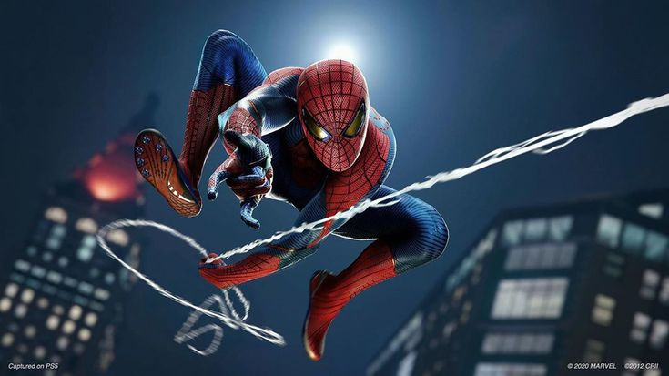

Bem-Vindo ao Espetacular Mundo do Homem-Aranha!
Prepare-se para balançar entre arranha-céus, enfrentar vilões icônicos e vivenciar a incrível jornada de Peter Parker, o lendário Homem-Aranha. Neste universo repleto de emoções, cada teia lançada é uma manifestação da coragem e da responsabilidade que define esse extraordinário herói.
No coração da cidade que nunca dorme, Nova York, o Homem-Aranha tece sua teia de heroísmo, protegendo os inocentes e enfrentando desafios que vão além dos limites físicos. Das páginas dos quadrinhos para as telas do cinema, o Homem-Aranha tornou-se um ícone cultural, conquistando corações com sua mistura única de humor, inteligência e bravura.
Aqui, exploraremos a rica mitologia do Cabeça de Teia, desde suas origens humildes como estudante universitário até as batalhas épicas contra inimigos formidáveis como o Duende Verde, o Doutor Octopus e o Venom. Vamos nos aprofundar nos aspectos fascinantes de sua vida dupla, revelando o que significa ser o Homem-Aranha dentro e fora da máscara.
Prepare-se para uma imersão total neste universo extraordinário, onde o heroísmo é tão fluido quanto as teias que se lançam pelos céus. Embarque nesta jornada emocionante e descubra por que o Homem-Aranha é mais do que um simples super-herói; ele é um símbolo de esperança, perseverança e a força que reside em cada um de nós.
Sinta a adrenalina, viva a emoção e junte-se à legião de fãs que celebram o legado atemporal do Homem-Aranha. A aventura está prestes a começar - prepare-se para balançar!
